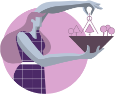
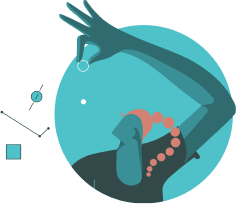

Enneagram Type 1 In A Relationship With Type 4
How Does Each Enneagram Type Enhance the Relationship?
Enneagram type 1s (Reformers) and Enneagram type 4s (Individualists) have a mutual interest in giving something beautiful to the world. Both of them are dreamy, idealistic and are really concerned about doing their work and self-expressions well. They are visionaries that look at projects or things and imagine how they could be different and even be better if things go as planned. If they work together, it could result in something limitless, magic and transcendent.On one hand, Enneagram type 1s usually offer truth, objectivity, reasoning and value to the relationship. They also bring self-discipline, good work habits, and regularity. Ones are aware of their own needs and change them for the greater good, a specific vision or goal (including the ones they see as the core of the relationship itself.)
On the other hand, Fours bring in all their sensuality, spontaneity, creativity, inspiration, intense feelings, and the power of the unconscious. Their sensitivity and emotions can balance One’s typical formality and sense of order as they give One a permission to explore and fully express the variety of feelings and passions within them. Generally speaking, Ones bring boundaries and self-restraint to the relationship, which can work as a role model for Fours, who tend to be more unregulated.
Both Enneagram types have a taste for refinement, beauty and arts, and if both value what the other has to offer, they can form a long-lasting and productive bond that helps balance each side’s limitations while bringing out qualities each of them lacks.


Possible Conflicts and Differences of Opinion:
While Reformers see themselves as reasonable and objective people, Individualists interpret different events using a subjective and personal perspective even when trying to be objective. Although both bring some kind of idealism to the relationship, their idealism is utterly different: Ones are drawn to social, political and moral causes while Fours are concerned about their personal lives.
26
Enneagram 1 in Relationships